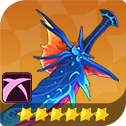
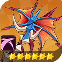
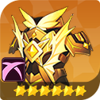
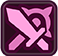
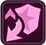
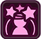
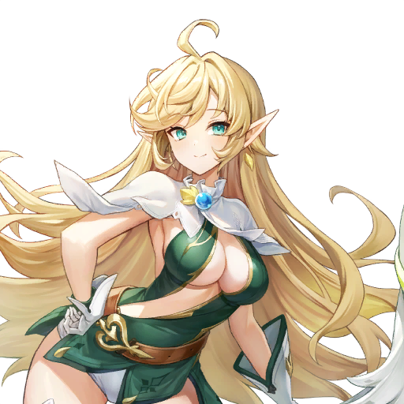

⚒️ Trang bị: Set, dòng chính và dòng phụ
Hero mạnh hay yếu, một nửa nằm ở trang bị. Bài này giải thích từ đầu: một hero đeo những gì, set là gì, đọc dòng chính và dòng phụ ra sao, đồ nào hợp tướng sát thương, đồ nào hợp tướng chống chịu — và món nào đáng nâng, món nào nên giữ, món nào nên bán.
⚒️ Một hero đeo những gì
Trang bị là nguồn sức mạnh lớn nhất của hero sau khi đã luyện xong cấp độ và kỹ năng. Một hero đầy đủ đồ sẽ đeo: 2 vũ khí, 2 giáp, 1 phụ kiện (1 nhẫn chính + 1 nhẫn tinh luyện) và 1 trang bị riêng (Dedicated Equipment). Mỗi món đồ có sao (★) và cấp cường hóa (+) riêng — sao càng cao, chỉ số nền càng lớn và cường hóa được càng cao.
Điểm người mới hay nhầm nhất: lúc đầu mỗi hero chỉ mở sẵn 1 ô vũ khí và 1 ô giáp. Ô thứ hai của mỗi loại chỉ mở khi bạn làm Ultimate Enhancement cho hero đó. Muốn kích hiệu ứng bộ 4 món thì bắt buộc phải mở đủ 4 ô vũ khí/giáp — chỉ đeo 2 món thì tối đa chỉ kích được hiệu ứng bộ 2 món (hoặc 2 bộ 2 món khác nhau).
Các loại trang bị
| Loại | Lấy ở đâu | Đặc điểm |
|---|---|---|
| Common | Rơi ở Adventure | Chỉ số cơ bản, dùng tạm đầu game để lấp ô trống. |
| Raid | Raid, chế tạo | Mạnh hơn Common nhiều, mang hiệu ứng 1 trong 9 bộ set. Đây là đồ chính từ giữa game trở đi. |
| Seven Knights | Topaz Exchange Shop | Đồ 6★, luôn có sẵn All Attack 6.5% cố định. |
| Four Lords of Old | Advent Expedition | Đồ theo boss của Expedition, chỉ số nền tương đương đồ Raid. |
| Sudden Raid | Sudden Raid | Đồ 6★, tỉ lệ ra 4 dòng phụ cao hơn đồ Raid thường, được chọn trước set và dòng chính muốn farm. |
| Shared | Hộp đồ từ Raid tầng 4 trở lên | Hero 6★ nào cũng đeo được, chỉ tăng chỉ số nền, không có dòng phụ — dùng tạm chờ đồ riêng. |
| Dedicated | Quay, chế tạo, shop, event (xem mục 08) | Đồ riêng từng hero, đeo ở ô riêng, hiệu ứng chỉ kích hoạt khi đúng hero đó đeo. |
Chỉ số nền của đồ Raid 6★ (để hình dung)
- Vũ khí: PATK hoặc MATK 64 (tùy vũ khí vật lý hay phép).
- Giáp: DEF 39 + HP 224.
- Đồ Seven Knights: vũ khí 58, giáp DEF 36 + HP 193, kèm All Attack 6.5% cố định.
Chỉ số nền chỉ là điểm khởi đầu — sức mạnh thật của một món đồ nằm ở set, dòng chính và dòng phụ của nó. Ba phần sau giải thích từng thứ một.



Mỗi set đều có 3 dạng mảnh đồ như trên: vũ khí vật lý, vũ khí phép và giáp — khác nhau ở chỉ số nền và dòng chính có thể roll ra.
🛡️ Set là gì, hiệu ứng bộ 2 và bộ 4 món
Mỗi món đồ Raid thuộc về một bộ set. Đeo 2 món cùng set thì kích hiệu ứng bộ 2 món; đeo 4 món cùng set thì kích thêm hiệu ứng bộ 4 món (số trong cột bộ 4 món là hiệu ứng đầy đủ khi đeo đủ 4 món). Có tất cả 9 set, chia theo 3 Boss Raid — mỗi Boss rớt 3 set.
Hiệu ứng từng set
| Set | Boss | 2 món | 4 món | Hợp với hero nào |
|---|---|---|---|---|
 Vanguard | Destroyer Gaze | All Attack +20% | All Attack +45% + Effect Hit Rate +20% | DPS gây sát thương theo thời gian (Burn, Bleed): Fai, Jave, Bi Dam; hero cần tăng Attack thuần. |
| Bounty Tracker | Destroyer Gaze | Weakness Hit Chance +15% | Weakness Hit Chance +35% + Weakness Hit Damage +35% | Attacker PvP: Miho, Ruri, Asura, Freyja; hero đã có sẵn 100% Crit thì dùng set này thay Assassin. |
| Paladin | Destroyer Gaze | Max HP +17% | Max HP +40% + Healing Received +20% | Healer và tank hồi máu theo Max HP: Lucy, Karin, Rosie, Lina. |
 Gatekeeper | Ox King | Block Rate +15% | Block Rate +30% + Damage Reduction khi Block +10% | Support và tank cần trụ sân lâu: Biscuit, Lucy, Radgrid; hero gây hiệu ứng cần sống lâu để tung skill. |
| Guardian | Ox King | Defense +20% | Defense +45% + Effect Resistance +20% | Tank và hero tăng sức mạnh theo DEF: Rudy, Evan, Giyu; hero có skill tạo Barrier hoặc hồi máu theo DEF. |
| Assassin | Ox King | Crit Rate +15% | Crit Rate +30% + Ignore Defense +15% | Attacker PvP và dame chính: Dellons, Silvesta, Yeonhee, Rin, Kyle, Lu Bu, Freyja. |
| Avenger | Iron Devourer | Damage Dealt +15% | Damage Dealt +30% + Damage to Bosses +40% | DPS đánh Boss và PvE: Shane, Pascal, Bai Long. |
| Spellweaver | Iron Devourer | Effect Hit Rate +17% | Effect Hit Rate +35% + Effect Probability +10% | Hero gây hiệu ứng khống chế và Death: Kris, Mercure, Nia, Rosie (team Death). |
 Orchestrator | Iron Devourer | Effect Resistance +17% | Effect Resistance +35% + miễn nhiễm khống chế 1 lượt đầu trận | Support chống hiệu ứng và xóa debuff: Rudy, Elysia, Diaochan, Chloe, Reginleif. |
Boss nào rớt set nào, Sudden Raid thì sao
| Boss Raid | Set rớt ra | Sudden Raid tương ứng |
|---|---|---|
| Destroyer Gaze | Vanguard · Bounty Tracker · Paladin | Calistra (Dusk) |
| Ox King | Gatekeeper · Guardian · Assassin | Astrea (Dawn) |
| Iron Devourer | Avenger · Spellweaver · Orchestrator | Leonid (Night) |
Thứ tự ưu tiên farm về lâu dài
Iron Devourer (Avenger / Spellweaver / Orchestrator) cao nhất — Orchestrator và Spellweaver dùng nhiều trong PvP, Avenger là set PvE tốt nhất khi tối ưu đủ. Tiếp theo là Ox King (Gatekeeper / Guardian / Assassin) — các set này nhìn chung mạnh, dùng được cho hầu hết hero, là lựa chọn mid-game tốt. Destroyer Gaze (Vanguard / Bounty Tracker / Paladin) không nên ưu tiên — phục vụ nhu cầu hẹp, hoặc cần hero Transcendence 6 mới dùng hết hiệu quả.
Nhưng với người mới, hãy farm Boss nào mình qua được ổn định trước (thực tế là Destroyer Gaze và Ox King) rồi mới tính tới set "ngon nhất". Đeo tạm set chưa tối ưu vẫn hơn là để trống ô đồ.
Set nào đang được dùng nhiều nhất? Thống kê từ build của 124 hero: Avenger 88 build, Gatekeeper 58, Bounty Tracker 43, Assassin 35, Spellweaver 25, Paladin 20, Vanguard 16, Orchestrator 10, Guardian 8. Avenger và Gatekeeper là hai set "quốc dân" — DPS lấy Avenger, tank và support lấy Gatekeeper.
🎯 Dòng chính là gì, đọc ra sao
Mỗi món vũ khí và giáp có 1 dòng chính (Main Stat) — đây là chỉ số lớn nhất trên món đồ đó, quyết định món đồ "nghiêng" về hướng nào. Dòng chính luôn đi kèm chỉ số nền cố định của món đồ:
- Vũ khí: chỉ số nền PATK (vũ khí vật lý) hoặc MATK (vũ khí phép) + 1 dòng chính.
- Giáp: chỉ số nền DEF + HP + 1 dòng chính.
Những dòng chính thường gặp
| Ô đồ | Dòng chính thường gặp |
|---|---|
| Vũ khí | Crit Rate, Crit Damage, Weakness Hit Chance, HP%, DEF%, Effect Hit Rate, All Attack % (hiếm gặp hơn: All Attack số cố định). |
| Giáp | All Attack %, Damage Taken Reduction, Block Rate, Effect Resistance, HP%, DEF% (hiếm gặp hơn: All Attack số cố định). |
Damage Taken Reduction chỉ có ở dòng chính của giáp — vũ khí không roll ra dòng này. Ngược lại, Crit Rate và Crit Damage là dòng chính đặc trưng của vũ khí.
Quy tắc vàng: dòng % luôn tốt hơn dòng số cố định
Với cùng một chỉ số, dòng % luôn tốt hơn dòng số cố định khi hero đã mạnh lên: All Attack % tăng theo tổng Attack của hero, còn All Attack số cố định thì đứng yên. Ví dụ: vũ khí dòng chính Crit Damage tốt hơn vũ khí dòng chính All Attack số cố định cho hầu hết DPS. Khi so hai món đồ, hãy nhìn dòng chính trước, dòng phụ sau.
Dòng chính lấy ở đâu, có đổi được không
- Lúc chế tạo (Craft Equipment): bạn được chọn 1 dòng chính trước khi chế — đây là cách chủ động nhất để có đúng dòng chính mình cần. Dòng phụ khi chế thì ngẫu nhiên.
- Cường hóa có tăng dòng chính: càng cường hóa cao, dòng chính càng mạnh — toàn bộ hiệu ứng của món đồ tăng theo cấp cường hóa.
- Đồ đã rơi sẵn thì dòng chính của nó là cố định. Tính năng Reconfigure chỉ đổi được dòng phụ và reset cấp cường hóa, không đổi được dòng chính — muốn dòng chính khác thì farm hoặc chế tạo món mới.
Dòng chính nào cho hero nào
- Tướng sát thương: vũ khí lấy Crit Damage hoặc Crit Rate (hoặc All Attack % nếu hero đã đủ Crit từ skill); giáp lấy All Attack %.
- Tướng chống chịu: vũ khí lấy HP% hoặc DEF% tùy hero tăng sức mạnh theo HP hay DEF; giáp lấy Block Rate hoặc Damage Taken Reduction.
- Healer: vũ khí lấy HP% (hồi máu thường tính theo Max HP); giáp lấy HP% hoặc Block Rate.
- Hero gây hiệu ứng: vũ khí và giáp ưu tiên Effect Hit Rate để debuff dính chắc hơn.
✨ Dòng phụ là gì, cường hóa mở dòng phụ ra sao
Ngoài dòng chính, mỗi món đồ còn có các dòng phụ (Substat) — những chỉ số cộng thêm nhỏ hơn nhưng cộng dồn lại mới tạo ra sự khác biệt giữa một món đồ "dùng được" và một món đồ "ngon". Một món đồ tối đa có 4 dòng phụ.
Danh sách dòng phụ
Có tất cả 23 dòng phụ trong dữ liệu game. Nhóm lại cho dễ nhớ:
- Tấn công: PATK%, MATK%, All Attack %, Crit Rate, Crit Damage, Weakness Hit Chance.
- Phòng thủ: DEF%, HP%, Block Rate, Damage Taken Reduction, Effect Resistance.
- Hiệu ứng và tốc độ: Effect Hit Rate, Speed.
- Chỉ có qua Tuning đồ riêng (không có trên vũ khí/giáp thường): Damage Amplification, Crush, Resilience, Rejuvenate — xem mục 08.
- Còn lại: All Attack, PATK, MATK, DEF, HP (dạng số cố định).
Cường hóa mở dòng phụ như thế nào
Cường hóa vũ khí và giáp tốn Gold, và có tỉ lệ thất bại. Cấp cường hóa tối đa phụ thuộc vào sao của món đồ:
| Sao | Cường hóa tối đa |
|---|---|
| 1★ – 2★ | +3 |
| 3★ | +6 |
| 4★ | +9 |
| 5★ | +12 |
| 6★ | +15 |
- Cứ mỗi +3 lại mở ngẫu nhiên 1 dòng phụ mới — tới tối đa 4 dòng phụ trên một món đồ.
- Tại +12 và +15, thay vì mở dòng mới, một dòng phụ ngẫu nhiên đã có sẽ được tăng cường thêm.
- Quy tắc +6: nâng món đồ lên +6 trước rồi xem dòng phụ — dòng ngon thì nâng tiếp, dòng xấu thì dừng lại để tiết kiệm Gold và tài nguyên.
Chế tạo đồ (Crafting)
Vào Home → Upgrade Equipment → Craft Equipment, dùng vật liệu chế tạo lấy từ Raid. Khi chế tạo bạn được chọn 1 dòng chính, dòng phụ ra ngẫu nhiên, không bao giờ thất bại, chế hàng loạt tối đa 20 món một lần.
Advance Crafting (chế tạo nâng cao): tốn thêm vật liệu Raid của từng món + Essence of Memories + Gold. Đổi lại, món đồ ra có cố định 4 dòng phụ, bạn chọn dòng chính trước và được roll lại dòng phụ nhiều lần tới khi ra dòng mong muốn. Essence of Memories lấy từ Sudden Raid.
Đổi dòng phụ: Chaos Essence và Oblivion Essence (Reconfigure)
Vào Upgrade Equipment → Reconfigure Equipment (mở sau khi qua Adventure 4-10). Chỉ dùng cho đồ 6★ trở lên.
| Essence | Tác dụng | Khi nào dùng |
|---|---|---|
| Chaos Essence | Roll lại ngẫu nhiên tất cả dòng phụ đang có, giữ nguyên cấp cường hóa. Được khóa tối đa 1 dòng phụ ngon để giữ nguyên nó (chỉ roll 3 dòng còn lại), nhưng khóa sẽ làm chi phí Chaos Essence tăng gấp đôi. Sau khi roll được chọn giữ giá trị cũ hoặc lấy giá trị mới. Có chế độ Auto Reroll (đặt sẵn chỉ số mong muốn, tự roll tới khi đạt). | Khi món đồ có 0–1 dòng phụ ngon — roll lại dòng xấu, khóa dòng ngon nếu nó đã tăng cường tốt. |
| Oblivion Essence | Reset cấp cường hóa về +0, các dòng phụ mở do cường hóa bị xóa. Gold đã tốn trước đó không được hoàn. | Khi món đồ có 2–3 dòng phụ ngon nhưng chưa được tăng cường — reset để có cơ hội mở dòng thứ 4 đẹp. |
Lấy Essence ở đâu: rơi từ Raid tầng cao và Sudden Raid; mua ở Arena Shop (Chaos Essence 200 huy chương Advanced Medal of Victory, Oblivion Essence 1.000 huy chương) và Topaz Shop (Chaos 100 Topaz, Oblivion 500 Topaz). Lưu ý: sau cập nhật 29/10/2026, Advanced Arena đổi tên thành Event Arena và Arena thường chuyển sang thể thức League — tên shop và giá có thể đã đổi, hãy kiểm tra lại trong game trước khi mua.
📊 Giải thích tất cả chỉ số của một nhân vật
Mở bảng chỉ số của bất kỳ hero nào, bạn sẽ thấy một loạt chỉ số — phần này giải thích từng cái một, để bạn đọc build nào cũng hiểu đang cần gì.
Chỉ số gốc mọi hero ở cấp tối đa: Crit Rate 5%, Crit Damage 150%, Weakness Hit Chance 0%, Block Rate 0%, Damage Taken Reduction 0%, Effect Probability 0%, Effect Resistance 0%.
Chỉ số tấn công
| Chỉ số | Tác dụng |
|---|---|
| PATK (Physical Attack) | Tấn công vật lý — càng cao, đòn đánh vật lý gây càng nhiều sát thương. |
| MATK (Magic Attack) | Tấn công phép — tương tự, cho sát thương phép. |
| All Attack | Tấn công chung, dùng cho cả hai loại sát thương (dạng % hoặc số cố định trên vũ khí, giáp và dòng phụ). Hero tăng sức mạnh theo DEF hoặc HP thì dòng này ít quan trọng hơn. |
| Crit Rate | Tỉ lệ đánh chí mạng. Càng gần 100% càng tốt cho DPS — nhưng nếu hero đã có 100% Crit từ skill, đừng dồn thêm Crit nữa, chuyển sang Crit Damage. |
| Crit Damage | Sát thương khi đánh chí mạng. Tối đa 500%. Lưu ý: đòn crit có thể không kích hoạt nếu bị Block. |
| Weakness Hit Chance | Tỉ lệ đánh Weakness Hit. Khi đòn đơn mục tiêu gây Weakness Hit, đòn đó ưu tiên địch có % HP còn lại thấp nhất và gây thêm 30% sát thương. |
| Damage Amplification | Tăng sát thương gây ra — cả sát thương thường lẫn sát thương từ hiệu ứng như Burn. Chỉ lấy được qua Tuning đồ riêng, không có trên vũ khí và giáp thường. |
Chỉ số phòng thủ
| Chỉ số | Tác dụng |
|---|---|
| DEF (Defense) | Càng cao càng ít sát thương nhận vào. Nhiều hero tăng sức mạnh theo DEF — Barrier và hồi máu của họ tính theo DEF (ví dụ Evan, Rudy). |
| HP | Hết HP (xuống 0) thì hero gục. Nhiều hồi máu và Barrier tính theo Max HP (ví dụ Lina, Karin). |
| Block Rate | Tỉ lệ Block khi nhận sát thương. Khi Block, sát thương nhận vào giảm một nửa và đòn đó không thể crit. Mục tiêu thực tế của nhiều tank là 100% Block. |
| Damage Taken Reduction | Càng cao càng ít sát thương nhận vào. Đây là dòng chính đặc trưng của giáp. |
| Resilience | Giảm Crit Damage phải nhận. Chỉ lấy được qua Tuning đồ riêng. Tốt cho hero có Block thấp; nếu hero đã 100% Block thì Rejuvenate thường tốt hơn. |
| Rejuvenate | Tăng lượng hồi máu nhận vào và độ bền của Barrier. Chỉ lấy được qua Tuning đồ riêng. Tốt cho team tank dựa vào hồi máu và Barrier. |
Chỉ số hiệu ứng và tốc độ
| Chỉ số | Tác dụng |
|---|---|
| Effect Hit Rate | Khi gây hiệu ứng xấu (debuff), chỉ số này đối kháng với Effect Resistance của mục tiêu — Effect Hit càng cao, debuff càng dễ dính. |
| Effect Resistance | Càng cao càng ít bị dính hiệu ứng xấu. |
| Effect Probability | Khả năng gắn debuff của một skill = Effect Probability × tỉ lệ debuff của skill × (Effect Hit Rate so với Resistance của mục tiêu). Đây là chỉ số riêng, khác với Effect Hit Rate. |
| Speed | Càng cao đánh càng nhanh. Bên nào tổng Speed cả team cao hơn sẽ được dùng skill trước — đây là chỉ số ưu tiên số 1 trong PvP. |
| Crush | Khi tấn công, giảm Block Rate của mục tiêu đúng bằng giá trị Crush — giúp crit xuyên qua cả địch có 100% Block. Chỉ lấy được qua Tuning đồ riêng. Chủ yếu dùng cho PvP: Boss Raid và quái thường mặc định có 0% Block nên Crush gần như vô dụng ở PvE. |
Các loại sát thương đặc biệt
- Crit: đòn chí mạng, sát thương tăng theo Crit Damage, có thể bị Block chặn.
- Block: đòn bị chặn — sát thương giảm một nửa.
- Weakness Hit: đòn đánh vào điểm yếu — thêm 30% sát thương, ưu tiên địch thấp HP nhất (với đòn đơn mục tiêu).
- Miss: đòn trượt — sát thương giảm 20%, không crit, và hủy toàn bộ hiệu ứng xấu kèm theo đòn đó.
- Fixed Damage: sát thương cố định — không bị ảnh hưởng bởi tăng hay giảm sát thương, không crit, không Block, không Miss.
Không có chỉ số nào tên là Penetration. Cơ chế tương đương trong game là Ignore Defense — bỏ qua một phần DEF của địch (ví dụ set Assassin bộ 4 món cho +15% Ignore Defense, nhiều skill cũng có hiệu ứng này) và Pierce — xuyên qua hiệu ứng miễn nhiễm sát thương.
⚔️ Đồ cho tướng sát thương khác đồ chống chịu ở đâu
Nguyên tắc chung: tướng sát thương dồn hết vào chỉ số tấn công, tướng chống chịu dồn hết vào sống sót. Đeo nhầm hướng là hero yếu đi một nửa dù đồ có sao cao.
Set khuyên dùng theo vai trò
| Vai trò | Set khuyên dùng | Hero ví dụ |
|---|---|---|
| Attacker PvE (đánh Boss) | Avenger | Shane, Pascal, Bai Long |
| Attacker PvP | Assassin / Bounty Tracker | Lu Bu, Freyja, Kyle |
| Support, Healer, Tank | Gatekeeper / Guardian / Paladin | Biscuit, Lucy, Radgrid |
| Support chống hiệu ứng | Orchestrator | Elysia, Reginleif, Rudy |
| Hero gây hiệu ứng Death và khống chế | Spellweaver | Kris, Mercure, Nia |
| Hero gây sát thương theo thời gian (Burn, Bleed) | Vanguard | Fai, Jave, Bi Dam |
Tướng sát thương (DPS — Attack và Magic)
- Dòng chính vũ khí: Crit Damage hoặc Crit Rate (hoặc All Attack % nếu hero đã đủ Crit từ skill); dòng chính giáp: All Attack %.
- Dòng phụ ưu tiên: Crit Rate, Crit Damage, Weakness Hit Chance, All Attack (%), Speed — Speed là ưu tiên số 1 cho PvP vì team có tổng Speed cao hơn được đánh trước.
- Set: Avenger cho PvE và đánh Boss; Assassin hoặc Bounty Tracker cho PvP. Mẹo: hero đã có sẵn 100% Crit thì dùng Bounty Tracker; hero đã có sẵn 100% Weakness Hit thì dùng Assassin.




Tướng chống chịu và hỗ trợ (Tank, Support, Healer)
- Dòng chính vũ khí: HP% hoặc DEF% tùy hero tăng sức mạnh theo HP hay DEF; dòng chính giáp: Block Rate, Damage Taken Reduction hoặc All Attack % (healer hồi máu theo HP thì lấy HP%).
- Dòng phụ ưu tiên: Block Rate, HP (%), Defense (%), Damage Taken Reduction, Effect Resistance, Speed (cho PvP).
- Set: Gatekeeper để trụ sân nhờ Block; Guardian cho hero tăng sức mạnh theo DEF; Paladin cho healer hồi máu theo Max HP; Orchestrator để chống hiệu ứng và xóa debuff.
- Hero gây hiệu ứng: Spellweaver + Effect Hit Rate và Effect Probability. Hero gây sát thương theo thời gian: Vanguard + All Attack %.


💰 Món nào đáng nâng, món nào nên giữ hoặc bán
Món nào đáng nâng
- Đồ Raid 6★ đúng set theo vai trò (Avenger cho DPS đánh Boss, Gatekeeper / Guardian / Paladin cho tank và healer) — đây là đồ dùng lâu dài, nâng không phí.
- Dòng chính % luôn tốt hơn dòng chính số cố định (All Attack % tốt hơn All Attack, HP% tốt hơn HP).
- Món có nhiều dòng phụ sẵn thì trần chỉ số cao hơn món ít dòng phụ.
- Dòng phụ "ngon": DPS — Crit Rate, Crit Damage, Weakness Hit Chance, All Attack (%), Speed (cho PvP); Tank và Support — Block Rate, HP (%), Defense (%), Damage Taken Reduction, Effect Resistance; hero gây hiệu ứng — Effect Hit Rate. Dòng Speed roll cao đặc biệt quý cho PvP — nên giữ lại và khóa lại khi reroll.
Thứ tự ưu tiên tài nguyên cho người mới
- Set trước, dòng phụ sau: ưu tiên kích đủ bộ 2 món hoặc bộ 4 món đúng vai trò, rồi mới tối ưu dòng phụ.
- Chỉ nâng đồ cho 4 hero chính trước, đừng rải đều cho cả đội hình. Ưu tiên PvE trước PvP — Adventure và PvE cho tài nguyên để build hero.
- Đừng nâng quá +3 lúc đầu, trừ khi là món 6★ sẽ dùng lâu dài. Đầu game nâng tối đa +5, chỉ nâng đồ 4★ trở lên; giữa game đẩy DPS chính lên +10; cuối game mới +15 và săn dòng phụ hoàn hảo.
- Đừng đợi đồ hoàn hảo mới đeo — đeo đồ rớt từ Adventure ngay, cải thiện dần. Đầu game cứ dùng tính năng Equip Recommended (đeo đồ gợi ý), quen rồi tự chỉnh tay.
- Đồ Common dùng tạm đầu game là bình thường — chỉ tăng chỉ số cơ bản, lấp ô trống. Đừng dồn Gold nâng đồ Common; Gold và tài nguyên cường hóa nghiêm túc dành cho đồ Raid 6★.
- Chaos Essence và Oblivion Essence để dành cho đồ 6★ xịn — đừng phí reroll và reset cho đồ tạm.
- Gold là nút thắt: cường hóa đồ 6★ và phụ kiện tốn rất nhiều Gold. Farm Gold đều từ đầu (Gold Dungeon, bán đồ thừa, Raid).
Món nào nên giữ
- Đồ đúng set + đúng dòng chính % cho hero chính của bạn.
- Đồ đã kiểm tra ở +6 mà dòng phụ ngon.
- Đồ có dòng Speed cao.
- Đồ Legendary Common +15 — để dành làm nguyên liệu đổi Dedicated Equipment (xem mục 08).
Món nào nên bán, bán được gì
- Bán lấy Gold: đồ bán được Gold, số Gold theo hạng và cấp cường hóa của món (nút bán ở dưới màn hình vũ khí và giáp trong túi đồ). Nên bán đồ 3★–5★ khi không còn cần. Có thể bật Auto-Sell trong cài đặt Repeat Battle để tự bán đồ rớt theo điều kiện bạn đặt.
- Nên bán: đồ có dòng chính số cố định; đồ ít dòng phụ (trần chỉ số thấp); đồ nâng lên +3 hoặc +6 mà dòng phụ toàn dòng xấu — dùng tính năng Sell Preset để đặt ngưỡng +3/+6, tự bán đồ không nâng trúng dòng cần.
- Rã đồ Dedicated thừa để lấy Tuning Crystals (xem mục 08): đồ Common 15 viên, Uncommon 20, Rare 50, Legendary 250, trùng Dedicated 500 viên. Hero chỉ cần 1 món Dedicated thì món thừa nên rã.
- Đồ Raid thường thì bán lấy Gold — không có tính năng rã đồ Raid thường ra vật liệu chế tạo.
🌟 Trang bị riêng (Dedicated Equipment) là gì
Dedicated Equipment là trang bị riêng của từng hero — đeo ở ô riêng, tách khỏi các ô vũ khí và giáp thường, và hiệu ứng đặc biệt của nó chỉ kích hoạt khi đúng hero đó đeo. Mỗi hero giữ tối đa 2 món Dedicated — có thể tune 1 món cho PvP và 1 món cho PvE. Hero nào chỉ cần 1 món thì món thừa nên rã lấy Tuning Crystals.
Có 5 hero không có đồ riêng: Bane, Cleo, Hokin, Leo, Rahkun.
Chỉ số nền và 2 cột dòng riêng
Ngoài chỉ số nền, mỗi món Dedicated có 2 cột dòng riêng (cột A và cột B), mỗi cột gồm 4 dòng giống nhau — bạn chọn 1 trong 2 cột để dùng:
| Hero | Tên đồ riêng | Chỉ số nền | Cột A (×4) | Cột B (×4) |
|---|---|---|---|---|
| Shane | Shane's Crusaders Badge | PATK +247 | Damage Amplification +4% | All Attack % +12% |
| Evan | Evan's Sword of Retaliation | DEF +153, HP +883 | DEF% +12% | Resilience +15% |
| Lina | Lina's White Flower Hairpin | DEF +153, HP +883 | Resilience +15% | HP% +12% |
Hero DPS thường có chỉ số nền PATK hoặc MATK +247; hero tank và support thường có DEF +153 kèm HP +883.
Kiếm đồ riêng bằng cách nào
| Cách | Chi tiết |
|---|---|
| Dedicated Equipment Summon | 80 Ruby một lượt. Đăng ký Wishlist 2 món để tăng tỉ lệ; bảo hiểm ở lượt quay thứ 100 chắc chắn ra 1 trong 2 món trong wishlist. Có thể quay bằng Dedicated Equipment Wish Summon Voucher (từ event, gói nạp, đổi ở shop Topaz, Honor, Total War và Guild War). Quay trùng món đã có thì tự đổi thành 500 Tuning Crystals. |
| Workshop — Dedicated Equipment Conversion | Dùng 4 món Legendary Common Equipment đã +15 đổi thành Dedicated Equipment Selection Box theo loại hero. Công thức theo loại hero: Attack — 4 kiếm Greatsword +15; Magic — 4 trượng Staff +15; Defense — 3 kiếm + 1 trượng; Support — 1 kiếm + 3 trượng; Universal — 2 kiếm + 2 trượng. Lưu ý: phải là đồ đã +15, không phải +0. |
| Raid và Ruby Farming | Đồ riêng rớt từ Ruby Farming Area 3 trở lên; Raid tầng 5 trở lên ra Dedicated Equipment Box. |
| Total War Shop | Dedicated Equipment Box I = 12.000 Total War Token (hộp ngẫu nhiên). |
| Guild War Shop | Dedicated Equipment Selection Box = 7.000 Pendant of Glory (được chọn món mình cần). |
| Infinite Tower | Qua tầng 370 được 2 Dedicated Equipment Selection Box. |
| Adventure Nightmare | Thu đủ 27 sao Nightmare được Dedicated Equipment Box II (ngẫu nhiên đồ của hero Legendary). |
| Advent Expedition | Hoàn thành toàn bộ nhiệm vụ 1 kỳ được 1 Dedicated Equipment Selection Box. |
| Event và hero Collab | Đồ riêng của hero Collab (Sung Jinwoo, Cha Hae-in, Yoo Jinho, Lee Joohee) không rớt và không quay được — nhận qua Mailbox nếu sở hữu hero. |
Mở ô, cường hóa và Tuning
- Mở ô đồ riêng: qua Ultimate Enhancement của hero đó.
- Cường hóa: giống đồ thường, tốn Gold, tối đa +15. Nên cường hóa lên +15 trước rồi mới tune.
- Tuning (gắn 4 dòng riêng): tại Equipment Enhancement → Tuning, dùng Tuning Crystals để gắn 4 dòng riêng cho món đồ. Có 9 loại hiệu ứng (Damage Amplification, Crush, Resilience, Rejuvenate, All Attack %, Defense %, HP %, Effect Hit Rate, Effect Resistance), chia 3 phẩm Uncommon, Rare, Legendary, ra ngẫu nhiên theo xác suất. Tune lại ô đã tune sẽ ghi đè hiệu ứng cũ. Có chế độ Auto-Tune (tự lặp tới khi ra đúng loại và phẩm bạn chỉ định).
- Tuning tốt nhất theo vai trò: PvE — Damage Amplification (kể cả support PvE cũng nên dùng để đẩy điểm); PvP Attacker — Damage Amplification hoặc Crush; PvP Support — Resilience hoặc Rejuvenate; hero gây sát thương bằng hiệu ứng (Mercure, Fai, Jave — Burn và Magic Reflux) — Damage Amplification; hero gây Death và khống chế (Mist, Kris, Yu Shin) — Resilience.
Kiếm Tuning Crystals ở đâu
Rã đồ Dedicated và đồ Common: Common 15 viên, Uncommon 20, Rare 50, Legendary 250, trùng Dedicated 500 viên. Ngoài ra: Total War Shop (400 token = 50 viên), Guild War Shop (120 Pendant = 50 viên), Weekly Ruby Shop (150 Ruby = 50 viên), event, Infinite Tower từ tầng 353, Advent Expedition, và Adventurer Skill ở cấp 175/185/195 (mỗi mốc 2.000 viên, một lần).
Dedicated Tuning Crystals (loại chỉ dùng cho 1 hero cụ thể) có hạn sử dụng — hết hạn sẽ tự đổi thành Tuning Crystals thường theo tỉ lệ 20:1. Nên dùng trước khi hết hạn.
Shared Equipment — đồ tạm chờ đồ riêng
Shared Equipment là đồ dùng chung: hero 6★ nào cũng đeo được, chỉ tăng chỉ số nền, không có dòng phụ. Dùng tạm tới khi bạn có đồ riêng của hero đó thì thay ra.
Dedicated là dự án dài hơi. Đầu game cứ dùng đồ Common, tập trung đồ riêng khi đội hình chính đã ổn định — đừng vội đốt Tuning Crystals khi chưa có món đồ riêng xứng đáng để tune.
❔ Những câu hỏi thường gặp
Mới chơi nên đeo đồ gì?
Đeo đồ Common rớt từ Adventure trước để lấp đủ ô, rồi chuyển dần sang đồ Raid 6★ khi qua được Raid. Đừng để trống ô đồ chờ đồ ngon.
Dòng chính % hay dòng chính số cố định?
Luôn chọn dòng % (All Attack % tốt hơn All Attack, HP% tốt hơn HP) khi hero đã mạnh lên — dòng % tăng theo tổng chỉ số của hero.
Khi nào dùng Chaos Essence, khi nào dùng Oblivion Essence?
Chaos Essence (reroll tất cả dòng phụ, được khóa tối đa 1 dòng) khi món đồ có 0–1 dòng phụ ngon. Oblivion Essence (reset cường hóa về +0) khi món đồ có 2–3 dòng phụ ngon nhưng chưa được tăng cường.
Có nên nâng đồ Common không?
Không. Đồ Common chỉ dùng tạm — Gold và tài nguyên cường hóa để dành cho đồ Raid 6★.
Tuning là gì, khi nào thì tune?
Tuning là gắn 4 dòng riêng cho món Dedicated Equipment bằng Tuning Crystals. Chỉ tune sau khi đã cường hóa món đó lên +15. PvE tune Damage Amplification; PvP Support tune Resilience hoặc Rejuvenate.
Đồ riêng (Dedicated) lấy ở đâu nhanh nhất cho người chơi miễn phí?
Đổi ở Workshop bằng 4 món Legendary Common +15, farm hộp Dedicated từ Raid tầng 5 trở lên và Ruby Farming Area 3 trở lên, đổi Selection Box ở Guild War Shop (7.000 Pendant) và Infinite Tower tầng 370. Quay Summon thì đăng ký Wishlist 2 món và nhớ mốc bảo hiểm lượt 100.
Vì sao đeo đủ 4 món cùng set mà không kích được hiệu ứng bộ 4 món?
Vì hero của bạn chưa mở đủ 4 ô vũ khí và giáp — ô thứ hai của mỗi loại chỉ mở khi làm Ultimate Enhancement. Mặc định chỉ có 2 ô nên tối đa chỉ kích được bộ 2 món.
Cùng khám phá Seven Knights Re:Birth
Theo dõi fanpage để cập nhật thêm các hướng dẫn dành cho cộng đồng.